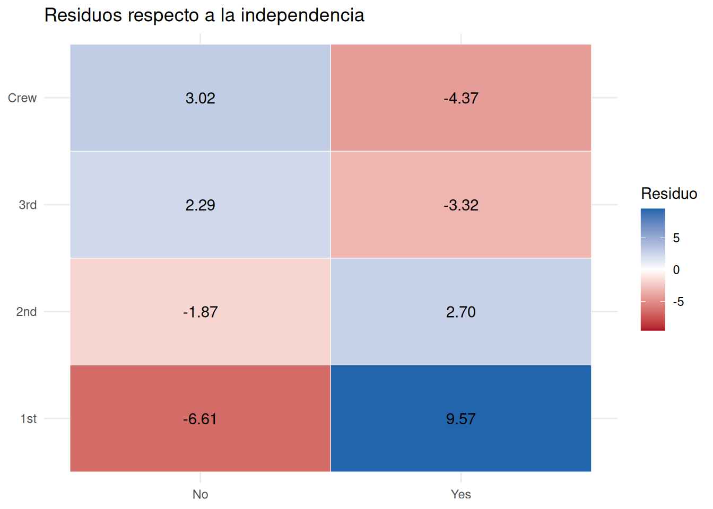
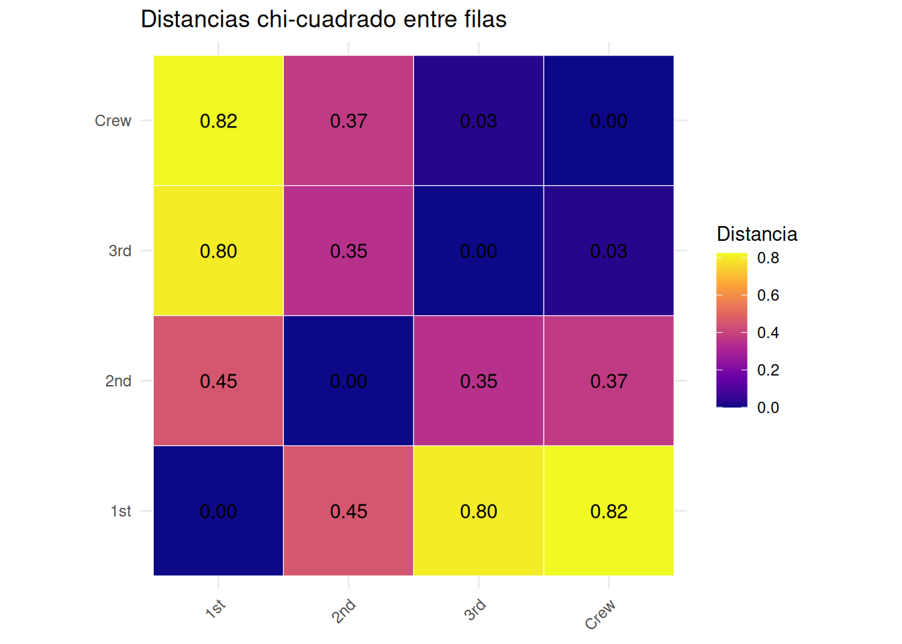
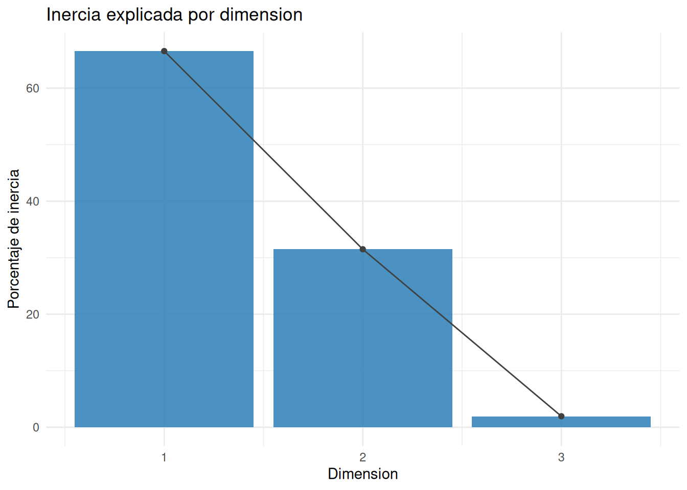
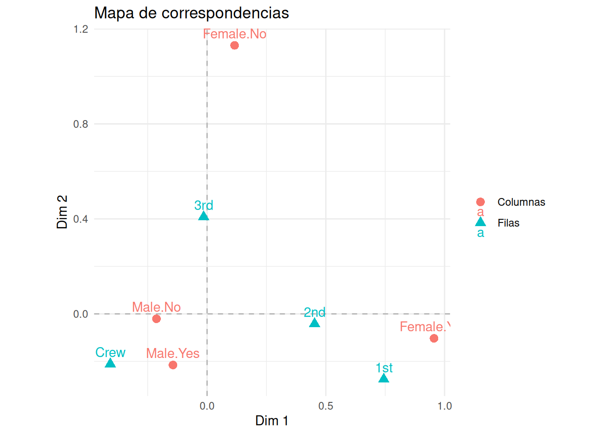
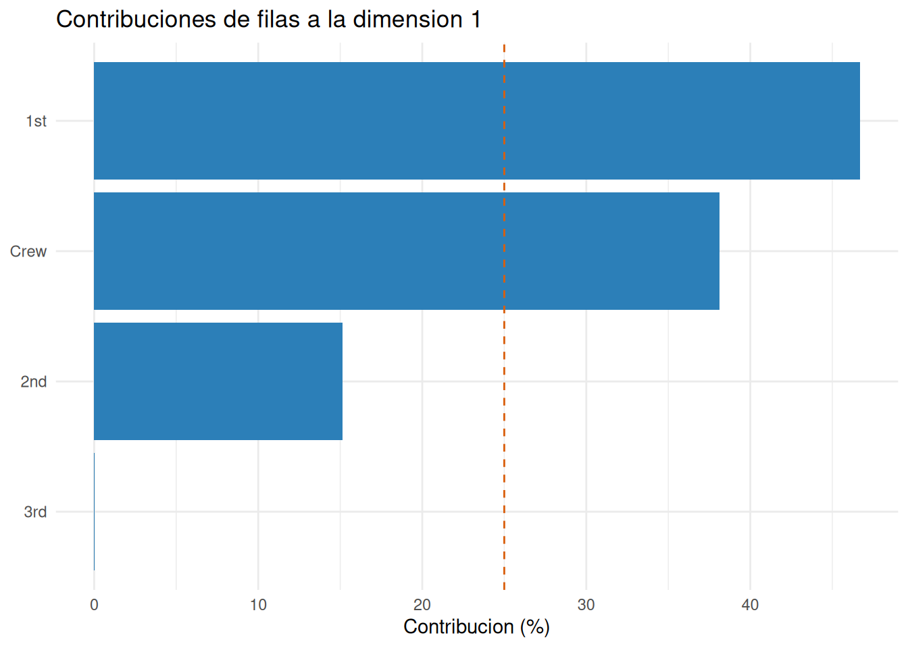
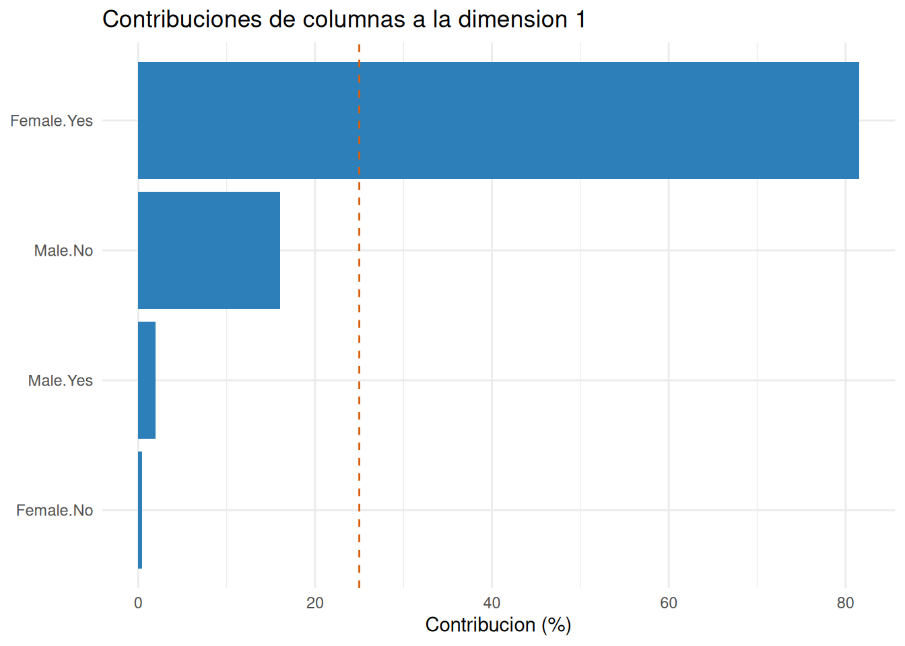

Código
library(tidyverse)
library(knitr)
source("FuncionesCorrespondencias.R")library(tidyverse)
library(knitr)
source("FuncionesCorrespondencias.R")La entrada debe ser una tabla de contingencia con frecuencias no negativas, nombres informativos y ninguna fila o columna de total cero. El análisis central se ajusta con FactoMineR::CA(tabla, graph = FALSE); las funciones auxiliares presentan perfiles, diagnósticos, contribuciones y gráficos.
Cuando tenemos dos variables categóricas, una tabla de contingencia muestra cuántos individuos aparecen en cada combinación. Por ejemplo, en Titanic podemos cruzar clase del pasajero y supervivencia.
Una tabla puede leerse directamente, pero cuando hay muchas filas o columnas cuesta ver qué categorías se asocian. El análisis de correspondencias simple, CA, transforma la tabla en un mapa factorial donde filas y columnas se representan como puntos.
El análisis de correspondencias representa desviaciones respecto a la independencia, no relaciones causales ni frecuencias brutas.
Supongamos una tabla de contingencia \(N=(n_{ij})\) con \(I\) filas y \(J\) columnas. El total de la tabla es:
\[ n = \sum_{i=1}^{I}\sum_{j=1}^{J} n_{ij}. \]
La matriz de frecuencias relativas es:
\[ P = \frac{1}{n}N. \]
La masa de la fila \(i\) es:
\[ r_i = \sum_{j=1}^{J} p_{ij}, \]
y la masa de la columna \(j\) es:
\[ c_j = \sum_{i=1}^{I} p_{ij}. \]
Las masas son pesos. Una fila con mucha frecuencia total tiene más peso en la geometría que una fila rara.
Usamos Titanic para estudiar asociación entre clase y supervivencia.
titanic <- as.data.frame(Titanic)
tab <- xtabs(Freq ~ Class + Survived, data = titanic)
resumen_tabla <- resumir_tabla_contingencia(tab)
kable(resumen_tabla$frecuencias)| No | Yes | |
|---|---|---|
| 1st | 122 | 203 |
| 2nd | 167 | 118 |
| 3rd | 528 | 178 |
| Crew | 673 | 212 |
kable(round(resumen_tabla$proporciones, 3))| No | Yes | |
|---|---|---|
| 1st | 0.055 | 0.092 |
| 2nd | 0.076 | 0.054 |
| 3rd | 0.240 | 0.081 |
| Crew | 0.306 | 0.096 |
La tabla absoluta permite ver tamaños. La tabla relativa permite leer proporciones sobre el total.
Dos variables categóricas son independientes si la probabilidad conjunta se factoriza como producto de marginales:
\[ p_{ij}=r_i c_j. \]
Bajo independencia, el valor esperado de la celda \((i,j)\) es:
\[ e_{ij}=\frac{n_{i+}n_{+j}}{n}. \]
En CA, lo importante no son solo las frecuencias observadas, sino cuánto se apartan de lo que esperaríamos bajo independencia.
kable(resumen_tabla$prueba_chi2, digits = 4)| chi2 | gl | p_valor | inercia |
|---|---|---|---|
| 190.4011 | 3 | 0 | 0.0865 |
kable(round(resumen_tabla$esperadas, 1))| No | Yes | |
|---|---|---|
| 1st | 220.0 | 105.0 |
| 2nd | 192.9 | 92.1 |
| 3rd | 477.9 | 228.1 |
| Crew | 599.1 | 285.9 |
Los residuos estandarizados comparan observado y esperado:
\[ res_{ij}=\frac{n_{ij}-e_{ij}}{\sqrt{e_{ij}}}. \]
Residuos positivos indican más casos de los esperados bajo independencia; residuos negativos indican menos.

Estos residuos son una primera lectura local de la asociación. CA construye una representación global de esas desviaciones.
El perfil fila de la fila \(i\) es la distribución condicional sobre columnas:
\[ f_{ij}=\frac{p_{ij}}{r_i}. \]
El perfil columna de la columna \(j\) es:
\[ g_{ij}=\frac{p_{ij}}{c_j}. \]
kable(round(resumen_tabla$perfiles_fila, 3), caption = "Perfiles fila")| No | Yes | |
|---|---|---|
| 1st | 0.375 | 0.625 |
| 2nd | 0.586 | 0.414 |
| 3rd | 0.748 | 0.252 |
| Crew | 0.760 | 0.240 |
kable(round(resumen_tabla$perfiles_columna, 3), caption = "Perfiles columna")| No | Yes | |
|---|---|---|
| 1st | 0.082 | 0.286 |
| 2nd | 0.112 | 0.166 |
| 3rd | 0.354 | 0.250 |
| Crew | 0.452 | 0.298 |
kable(resumen_tabla$masas_fila, digits = 3, caption = "Masas fila")| categoria | masa |
|---|---|
| 1st | 0.148 |
| 2nd | 0.129 |
| 3rd | 0.321 |
| Crew | 0.402 |
kable(resumen_tabla$masas_columna, digits = 3, caption = "Masas columna")| categoria | masa |
|---|---|
| No | 0.677 |
| Yes | 0.323 |
Las filas se comparan por sus perfiles, no por sus frecuencias absolutas. Dos filas son parecidas si distribuyen sus frecuencias entre columnas de forma parecida.
La distancia \(\chi^2\) entre dos perfiles fila \(i\) e \(i'\) es:
\[ d^2(i,i')= \sum_{j=1}^{J}\frac{1}{c_j} \left( \frac{p_{ij}}{r_i} - \frac{p_{i'j}}{r_{i'}} \right)^2. \]
Las columnas con masa pequeña pesan más porque diferencias en categorías raras son más informativas geométricamente. Esto también implica una advertencia: categorías raras pueden generar puntos extremos.
Para columnas se define una distancia análoga ponderando por masas fila:
\[ d^2(j,j')= \sum_{i=1}^{I}\frac{1}{r_i} \left( \frac{p_{ij}}{c_j} - \frac{p_{ij'}}{c_{j'}} \right)^2. \]
kable(round(as.matrix(distancias_chi2(tab, "filas")), 3))| 1st | 2nd | 3rd | Crew | |
|---|---|---|---|---|
| 1st | 0.000 | 0.450 | 0.797 | 0.823 |
| 2nd | 0.450 | 0.000 | 0.346 | 0.373 |
| 3rd | 0.797 | 0.346 | 0.000 | 0.027 |
| Crew | 0.823 | 0.373 | 0.027 | 0.000 |

La distancia entre clases no compara cuántos pasajeros había en cada clase, sino cómo se distribuyó la supervivencia dentro de cada clase.
La inercia total de CA mide desviación global respecto a independencia. Está relacionada con el estadístico \(\chi^2\):
\[ Inercia = \sum_{i=1}^{I}\sum_{j=1}^{J} \frac{(p_{ij}-r_ic_j)^2}{r_ic_j} =\frac{\chi^2}{n}. \]
resumen_tabla$prueba_chi2$inercia[1] 0.08650663Si la tabla está muy cerca de independencia, la inercia será pequeña y el mapa tendrá poca estructura que representar.
El contraste y la inercia responden a preguntas diferentes. Con una muestra muy grande, una asociación pequeña puede ser estadísticamente significativa; la inercia describe el tamaño geométrico de la desviación. Debemos mirar ambos resultados y no equiparar automáticamente significación con importancia.
CA aplica una descomposición en valores singulares a la matriz de desviaciones estandarizadas:
\[ S = D_r^{-1/2}(P-rc^\top)D_c^{-1/2}, \]
donde \(D_r\) y \(D_c\) son matrices diagonales con masas fila y columna. Esta matriz contiene desviaciones respecto a independencia expresadas en la geometría \(\chi^2\).
P <- tab / sum(tab)
r <- rowSums(P)
c <- colSums(P)
Dr_inv_sqrt <- diag(1 / sqrt(r))
Dc_inv_sqrt <- diag(1 / sqrt(c))
S <- Dr_inv_sqrt %*% (P - r %*% t(c)) %*% Dc_inv_sqrt
kable(round(S, 4))| -0.1408 | 0.2039 |
| -0.0398 | 0.0576 |
| 0.0488 | -0.0707 |
| 0.0643 | -0.0931 |
La descomposición:
\[ S = UDV^\top \]
produce dimensiones factoriales. Los valores singulares al cuadrado son inercias principales:
\[ \lambda_m = d_m^2. \]
La SVD busca ejes ortogonales que recojan sucesivamente la mayor parte posible de la inercia. Es la misma idea geométrica de una proyección de baja dimensión, pero aplicada a desviaciones respecto a independencia y con la métrica \(\chi^2\), no a variables numéricas estandarizadas ordinarias.
Las coordenadas principales de filas son:
\[ F = D_r^{-1/2}UD. \]
Las coordenadas principales de columnas son:
\[ G = D_c^{-1/2}VD. \]
sv <- svd(S)
row_coord <- diag(1 / sqrt(r)) %*% sv$u %*% diag(sv$d)
col_coord <- diag(1 / sqrt(c)) %*% sv$v %*% diag(sv$d)
rownames(row_coord) <- rownames(tab)
rownames(col_coord) <- colnames(tab)
colnames(row_coord) <- paste0("Dim", seq_len(ncol(row_coord)))
colnames(col_coord) <- paste0("Dim", seq_len(ncol(col_coord)))
tibble(dimension = paste0("Dim", seq_along(sv$d)), inercia = round(sv$d^2, 5)) |>
kable()| dimension | inercia |
|---|---|
| Dim1 | 0.08651 |
| Dim2 | 0.00000 |
kable(round(row_coord[, 1, drop = FALSE], 3), caption = "Coordenadas fila")| Dim1 | |
|---|---|
| 1st | -0.645 |
| 2nd | -0.195 |
| 3rd | 0.152 |
| Crew | 0.179 |
kable(round(col_coord[, 1, drop = FALSE], 3), caption = "Coordenadas columna")| Dim1 | |
|---|---|
| No | 0.203 |
| Yes | -0.426 |
Con dos columnas solo hay una dimensión no trivial, porque el rango máximo es \(\min(I-1,J-1)\).
Para visualizar dos dimensiones, usamos una tabla más rica: clase por combinación de sexo y supervivencia.
tab2 <- xtabs(Freq ~ Class + interaction(Sex, Survived), data = titanic)
kable(tab2)| Male.No | Female.No | Male.Yes | Female.Yes | |
|---|---|---|---|---|
| 1st | 118 | 4 | 62 | 141 |
| 2nd | 154 | 13 | 25 | 93 |
| 3rd | 422 | 106 | 88 | 90 |
| Crew | 670 | 3 | 192 | 20 |
ca2 <- FactoMineR::CA(tab2, graph = FALSE)
resumen_ca <- resumir_correspondencias(ca2)
kable(resumen_ca$autovalores, digits = 3)| dimension | autovalor | porcentaje | acumulado |
|---|---|---|---|
| 1 | 0.175 | 66.560 | 66.560 |
| 2 | 0.083 | 31.494 | 98.054 |
| 3 | 0.005 | 1.946 | 100.000 |


El mapa debe leerse como representación de asociaciones. Una clase cercana a una categoría columna sugiere asociación relativa, no necesariamente frecuencia absoluta alta.
La contribución de una fila \(i\) a la dimensión \(m\) mide cuánto participa en la construcción de ese eje:
\[ ctr_{im}=\frac{r_i f_{im}^2}{\lambda_m}. \]
Para columnas:
\[ ctr_{jm}=\frac{c_j g_{jm}^2}{\lambda_m}. \]
contrib_filas <- contribuciones_correspondencias(ca2, "filas", dimension = 1)
contrib_columnas <- contribuciones_correspondencias(ca2, "columnas", dimension = 1)
kable(contrib_filas$tabla, digits = 3, caption = "Contribuciones de filas a la dimensión 1")| categoria | contribucion |
|---|---|
| 1st | 46.678 |
| Crew | 38.129 |
| 2nd | 15.155 |
| 3rd | 0.038 |
kable(contrib_columnas$tabla, digits = 3, caption = "Contribuciones de columnas a la dimensión 1")| categoria | contribucion |
|---|---|
| Female.Yes | 81.527 |
| Male.No | 16.068 |
| Male.Yes | 1.966 |
| Female.No | 0.439 |


Una categoría con alta contribución ayuda a definir la dimensión. Una categoría con baja contribución no debería protagonizar la interpretación del eje.
La contribución reparte la construcción del eje entre categorías y suma 100% dentro de cada dimensión. Por eso depende tanto de la coordenada como de la masa: un punto lejano con masa casi nula no necesariamente domina el eje.
El cos² mide qué proporción de la distancia de un punto al origen queda representada en una dimensión o conjunto de dimensiones. Para una fila:
\[ cos^2_{im}=\frac{f_{im}^2}{\sum_{h} f_{ih}^2}. \]
calidad_filas <- calidad_correspondencias(ca2, "filas")
calidad_columnas <- calidad_correspondencias(ca2, "columnas")
kable(calidad_filas$tabla, digits = 3, caption = "Cos² de filas en el plano")| categoria | cos2_plano |
|---|---|
| 2nd | 0.880 |
| 1st | 0.986 |
| 3rd | 0.997 |
| Crew | 1.000 |
kable(calidad_columnas$tabla, digits = 3, caption = "Cos² de columnas en el plano")| categoria | cos2_plano |
|---|---|
| Male.Yes | 0.752 |
| Male.No | 0.962 |
| Female.No | 0.996 |
| Female.Yes | 1.000 |
Un punto puede estar visualmente lejos, pero si está mal representado en el plano mostrado, conviene no interpretarlo demasiado.
Geométricamente, el cos² compara la longitud de la proyección sobre el eje con la distancia total al origen. Contribución y cos² no son intercambiables: la primera pregunta quién construye el eje; el segundo, si el eje representa bien a ese punto.
Con todas las dimensiones no triviales, las distancias euclídeas entre coordenadas principales reproducen las distancias \(\chi^2\) entre perfiles del mismo tipo. Al mostrar solo dos dimensiones proyectamos esa geometría y aceptamos pérdida. Por eso la inercia retenida y el cos² deben acompañar al mapa.
Las coordenadas fila y columna no viven originalmente en el mismo espacio métrico. Un mapa conjunto superpone dos representaciones útiles, pero la distancia directa entre un punto fila y uno columna no tiene la misma interpretación rigurosa que la distancia entre dos filas o entre dos columnas.
Al interpretar un mapa CA:
La proximidad entre categorías de la misma variable debe interpretarse con cautela. Lo central es cómo filas y columnas se asocian a las dimensiones y qué calidad tiene la representación.
Categorías con masa baja pueden aparecer muy alejadas y dominar visualmente el mapa. Antes de interpretar un punto extremo hay que revisar:
CA convierte una tabla de contingencia en un mapa de perfiles. Parte de la independencia, mide desviaciones mediante la distancia \(\chi^2\) y descompone la inercia en dimensiones factoriales. Su interpretación se basa en perfiles, masas, inercia, contribuciones, cos² y cautela ante categorías raras.
| Función | Para qué se usa | Uso básico |
|---|---|---|
xtabs() |
Construir una tabla de contingencia desde datos largos. | xtabs(Freq ~ fila + columna, datos) |
FactoMineR::CA() |
Ajustar el análisis de correspondencias. | FactoMineR::CA(tabla, graph = FALSE) |
resumir_tabla_contingencia() |
Obtener proporciones, perfiles, masas, esperadas, residuos, contraste e inercia. | resumen <- resumir_tabla_contingencia(tabla) |
distancias_chi2() |
Calcular distancias \(\chi^2\) entre perfiles fila o columna. | distancias_chi2(tabla, "filas") |
visualizar_distancias_chi2() |
Mostrar esas distancias como mapa de calor. | visualizar_distancias_chi2(tabla, "filas") |
visualizar_residuos_correspondencias() |
Localizar desviaciones respecto a independencia. | visualizar_residuos_correspondencias(tabla) |
resumir_correspondencias() |
Reunir inercia, coordenadas, contribuciones y cos². | resumen <- resumir_correspondencias(ajuste) |
visualizar_inercia_correspondencias() |
Representar el porcentaje de inercia por dimensión. | visualizar_inercia_correspondencias(ajuste) |
visualizar_correspondencias() |
Dibujar filas, columnas o el mapa conjunto. | visualizar_correspondencias(ajuste, "ambos") |
contribuciones_correspondencias() |
Identificar categorías que construyen una dimensión. | contribuciones_correspondencias(ajuste, "filas", 1) |
calidad_correspondencias() |
Evaluar el cos² acumulado en los ejes elegidos. | calidad_correspondencias(ajuste, "columnas", c(1, 2)) |